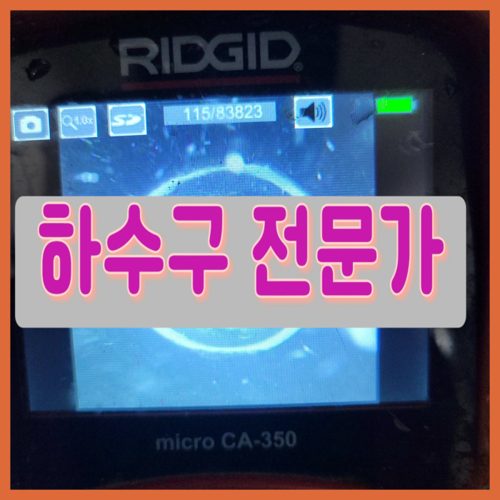
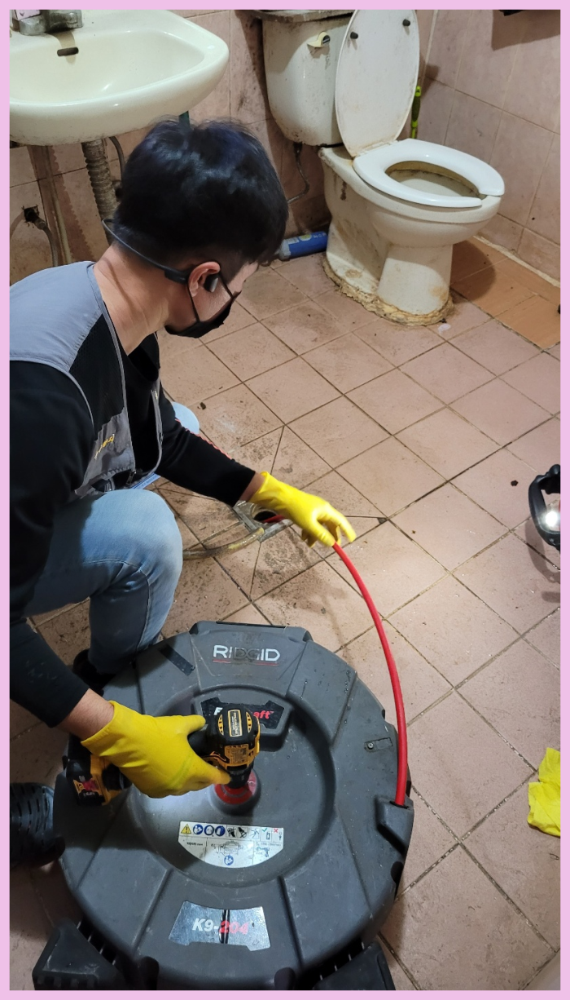
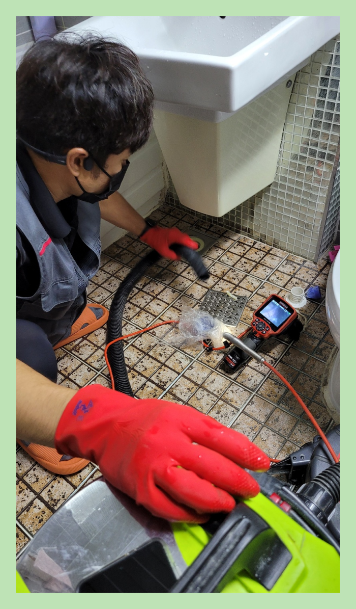
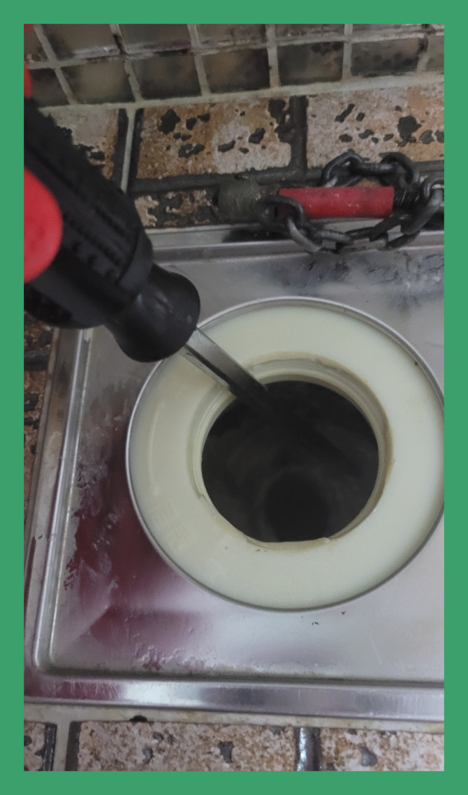
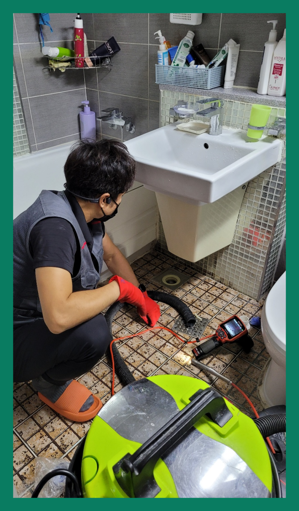
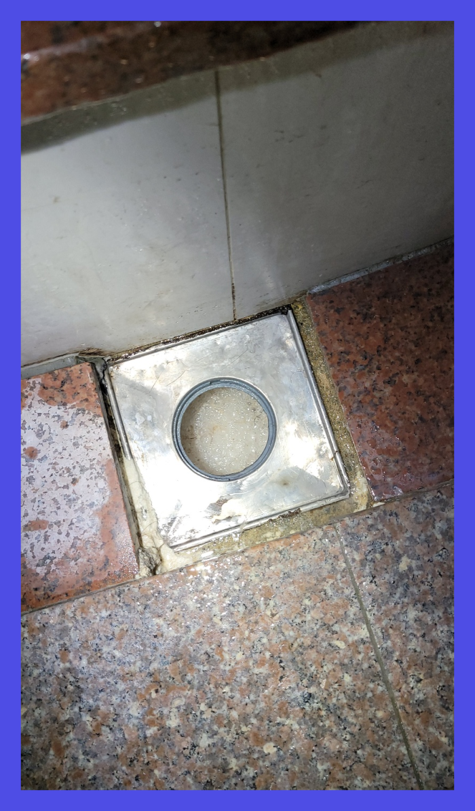
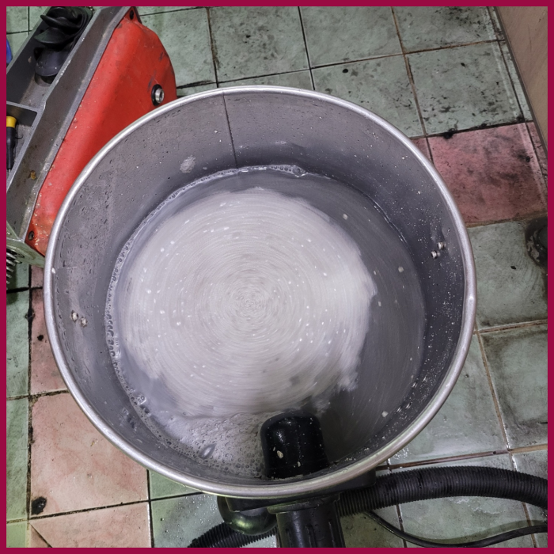

🏠 수원 정자동화장실하수구막힘 화서동 욕실바닥막힘 뚫는곳 하수구 설비
수원 싱크대막힘 전문 시공 후기

📋 작업 개요
- 위치: 수원
- 서비스 유형: 싱크대막힘, 변기막힘, 하수구막힘, 배관막힘, 맨홀막힘, 역류해결, 뚫는업체, 배관청소, 고압세척
- 작업 일시: 2023. 11. 27. 11:25
- 업체명: 하수구수사대 (010-5615-2118)
🔍 문제 상황
안녕하십니까^^
설비전문업체 "하수구수사대"를 찾아주셔서 고맙습니다^^
이번글에선 막혀버린 배수관 배관해서 말해드리겠습니다.빌라등 물을사용해야하는 곳이있다면 배수관가 존재하는데요. 이러하듯 당연한존재가 막히면 곤혹스러울텐데요. 문제없이 쓰고있던 배수관시설이 갑자기 망가진다면 불편해지게됩니다.
아무래도 전문가를 불러야 하는 것 같기에 신속하게 출장이 되는 주변 전문업체에 전화해서 퇴수구 뚫는 작업을 요청하셨답니다.
수원 정자동화장실하수구막힘 화서동 욕실바닥막힘 뚫는곳 하수구 설비

🔎 원인 분석
💡 전문가 진단: 수원 정자동화장실하수구막힘 화서동 욕실바닥막힘 뚫는곳 하수구 설비
하수관 막힘의 문제를 해결하는 데 있어서 눈에 보이지 않는 막힘의 원인을 찾는 것은 중요하고 필요한 방법이라고 할 수 있습니다. 배관의 내부를 처음부터 끝까지 배관 내시경을 통해서 꼼꼼하게 확인을 하는 작업을 하였습니다.
수도권 모든 지역에서 경력 있는 하수기사님들이 대기하고 있기 때문에 계신 지역이 어디든지 방문 드릴 수 있으며 아무리 심각한 상황이라고 할지라도 빠르게 대처해 드리기 위해서 1시간 이내 도착을 약속하고 있습니다.
전문가여도 내시경 기계가 없다면 배관이 무엇으로 막혔는지 정확하게 원인 규명을 해드릴 수 없어요. 원인을 알아야 뚫는 방법도 정해지니 장비도 꼭꼭 확인해 주세요.배관 내시경은 필수 장비랍니다!
성공률도 빼놓을 수 없는 요소겠지만 민첩하게 고칠 수 없다면 모든 손실들은 고객분의 몫이 되므로 가능한 한 빨리 달려나가퇴수 뚫어드리는 중이랍니다.
일상에 차지 중인 비중이 매우 많기 때문에 고장이 날 시 재빨리 대처하시는 것이 지혜로운 것이에요.하수도뚫어보시다가 아무 반응을 보이지 않아서 결국 설비회사들을 찾으시는 분들이 상상하는 것보다도 흔하답니다.

🔧 작업 과정
보통 고압세척이라고 하면 큰 건물 배관이나 맨홀에서 필요한 작업이라고 생각하시는 분들이 계신데 실제로 가정집 싱크대나배출구에서도 간편하게 작업할 수 있는 다양한 장비가 있습니다
배출구 바깥쪽으로 한번 더 이물질을 걸러주는 거름망이 사라졌기에, 다른 물체가 흘러내려가 원인이 되었을 수도 있겠다 싶기도 하였습니다. 일단 어느 곳이 배출구막힌 부분인지 확인하였으니, 카메라를 꺼낸 뒤 석션기를 넣어 흡입을 시작하였습니다.
하수도막힘을 스스로 뚫을때 대표적인 민간요법으로 알려진 방법 중에 하나로는 옷걸이를 이용하는 방법이 있는데요. 옷걸이를 길게 늘어트린 다음 깊숙하게 집어넣어 하수도막혀있는 이물질을 안으로 밀어 넣는 방법입니다. 다음으로는 약품을 넣는 방법이 있죠.
고치시다가 해결할수없어서 어쩔수없이 배관배관업체를 알아보시는분들이 많이있어요 문의하실때에 자세하게 체크해보셔야 별문제없이 해결할수있어요 정직한업체들을 위주로 찾아보고있으신데 여유가없는 상황이라면 저희에게 연락주시는걸 추천해요
배출관막힘 처리하지못한것에 관련해서는 금액을요구하는일은 있을수가없어요.방문한게다인데도 결제해야될때면 금액이배로들어서 고객분들만 기분이나빠지시는데요
소비자분의맨눈으로도 아실수있게 고객분께 배수관카메라를 보여드린후 상황에관해 얘기해드리고있습니다.이렇게하게되면 눈으로 못보던배수구 깊숙한곳까지 빈틈없이 볼수있습니다.제대로알아보고 수리하고있어서 거의성공하고있습니다
그전에 다른회사에 연락했었으나 흡족하지않으셨다면 무상수리를제공하고 확실하게뚫는 저희에게연락주시면 완벽히 세밀하게 처리해드리고 하수관수리해드리는것을 약속드리겠습니다
하지만 여기처럼 막힘이 심한 현장이라면 찌꺼기들을 하나도 남기지 않고 청소하는 게 앞으로의 하수도 막힘 재발방지를 하는 최선의 방법입니다. 정말 중요하게 여겨야 되는 건 분명한 문제를 알아내고 초반에 하수도막힘 문제점을 잡을 수 있었기에 한번에 해결할 수 있었습니다.


✅ 작업 완료
의뢰하기 전에 걱정하실 만한 것은 아마 배출구뚫는 금액 부분일 것입니다. 얼마가 필요할지 가늠이 안되는데 의뢰하기에는 겁이 나기 때문에 멈칫하실 수 있으십니다. 이를 알기에 유선상으로 안내해 드립니다.
#하수구막힘 #하수구뚫음 #하수구역류 #씽크대막힘 #싱크대역류 #오수관막힘 #하수구청소 #욕실하수구막힘 #변기막힘 #하수구뚫는비용 #싱크대수리 #화장실막힘




⚠️ 주방 싱크대 배관 막힘 예방 수칙
- ✅ 기름기가 묻은 식기나 프라이팬은 설거지 전 키친타올로 반드시 기름때를 닦아내세요.
- ✅ 주기적으로 싱크대 개수대에 뜨거운 물을 가득 받아 한 번에 내려 배관 내부 기름을 씻어내세요.
- ✅ 배수구 거름망을 미세한 필터로 사용하시고 음식물 찌꺼기가 틈으로 새어 들지 않게 관리하세요.
- ✅ 베이킹소다와 식초를 뜨거운 물과 함께 일주일에 한 번씩 부어주면 배관 살균과 막힘 예방에 좋습니다.
💡 핵심 정리
- 확실한 장비 작업(내시경 점검 및 샤프트 스케일링)으로 원인을 뿌리 뽑습니다.
- 작업 후 1년 이내에 동일한 부위 재발 시 100% 무상 A/S 서비스를 보장합니다.
- 서울 · 경기 · 인천 전 지역에 24시간 언제든 긴급 출동할 수 있도록 항시 대기 중입니다.
❓ 자주 묻는 질문 (FAQ)
🚨 수원 싱크대막힘 문제로 고민이신가요?
정확한 원인 진단과 확실한 시공으로 재발 없는 해결을 약속드립니다.
24시간 긴급 출동 | 서울 · 경기 · 인천 전지역 | 1년 내 재발 시 무상 A/S